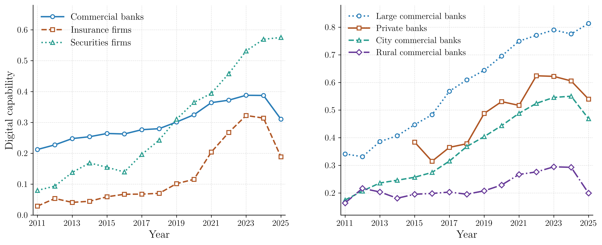

2025 平均数字化能力
0.300 较 2024 年 -0.075公开版指数当前覆盖 2010 至 2025 年的机构-年份面板。
Latest leaders
Index explorer
按年份、机构大类、类型和地区查看总指数及八个能力域的分布、趋势和排名。
样本均值
- -最高机构
- -领先能力域
- -Ranking
| 排名 | 机构 | 大类 | 类型 | 地区 | 数字化能力 |
|---|
Method
指数锚定中国人民银行金融数字化能力成熟度指引，使用八个能力域和 75 个能力项对公开披露文本进行语义评估。
年报、社会责任报告与信息披露报告进入统一清洗、匹配和校验流程。
治理体系、数据要素、基础设施、核心技术、经营动能、服务再造、审慎管理和可持续基础分别评分。
输出机构-年份公开版指数，不含评分原因、文件路径、内部结果 ID 等过程信息。

Download
下载文件与页面数据均来自 `03_测度结果/04_公开版指数/公开使用版.xlsx`。
Citation
Yang, C., Zeng, Y., & Zhang, S. (2026). Measuring Digital Capability in Chinese Financial Institutions. Working paper.